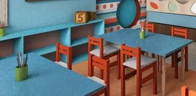

الطفل في الحضانة يلمس كل شي يشوفه، ويحط اللعبة في فمه، ويقعد على الأرض، ويحط خده على الطاولة، وينام على مرتبة استخدمها غيره أمس. وهذا يخلي تنظيف بيئة الأطفال يحتاج دقة أعلى، وحذر أكثر في اختيار المواد وطريقة استخدامها. وفي الرياض، مع كثرة الحضانات والروضات، صار أولياء الأمور يسألون عن تنظيف حضانات بالرياض قبل ما يسجلون أطفالهم.
محتويات المقال 44 قسم
- تنظيف حضانات بالرياض: ليش بيئة الأطفال تحتاج تنظيف أدق
- موقف يتكرر في حضانات الرياض
- الفرق بين التنظيف والتعقيم في الحضانة
- مواد تنظيف آمنة للحضانات بالرياض: كيف تختارينها ووش تتجنبين
- قواعد السلامة أثناء التنظيف
- غرفة الرضّع
- الألعاب المشتركة بين الفصول
- تعقيم ألعاب الأطفال بالرياض: كل نوع لعبة وطريقته
- الأسطح المهمة في الحضانة
- أدوات الرسم والصلصال والأقلام
- الكتب والقصص وزاوية القراءة
- الملعب الخارجي والألعاب الخارجية
- المداخل ومنطقة الاستلام
- أغراض الأطفال الشخصية
- غرفة القيلولة
- الستائر والنوافذ والجدران المنخفضة
- منطقة خلع الأحذية
- المقابض والمفاتيح والأبواب
- ركن اللعب التمثيلي
- أحواض الماء والرمل الداخلية
- مخزن الألعاب
- الشاشات والأجهزة التعليمية
- الهواء والتكييف
- برادة الماء وأكواب الشرب
- حافلة نقل الأطفال
- مكافحة الحشرات
- جدول مقترح
- سجل التنظيف
- تخزين المواد وملصقات البخاخات
- تدريب العاملات
- التواصل مع أولياء الأمور
- جولة المديرة اليومية
- ألوان الفوط لكل منطقة
- الانسكابات وحوادث البلل وقت الدوام
- الحفاضات المستعملة والنفايات
- أيام الغبار في الرياض
- تعويد الأطفال على عادات النظافة
- أخطاء شائعة
- بداية الفصل الدراسي والعودة بعد الإجازات
- بعد الصيانة أو التجديد
- الحضانات المنزلية والمراكز الصغيرة
- متى تحتاجين الاستعانة بشركة متخصصة؟ وبماذا تسألين
- أسئلة شائعة عن تنظيف الحضانات وتعقيم الألعاب
- الخاتمة
هالدليل موجه لمالكات ومديرات الحضانات ورياض الأطفال، ولأولياء الأمور اللي يبون يفهمون كيف ينظف المكان. نمشي فيه على الفرق بين التنظيف والتعقيم، وكيف تختار المواد، وقواعد السلامة وقت التنظيف، وطريقة تنظيف كل نوع من الألعاب، والأسطح المهمة، وجدول وسجل تقدرين تطبقينه.
💡 هالمقال معلوماتي عن التنظيف البيئي للمكان، وما هو نصيحة طبية. اشتراطات الترخيص والسلامة الرسمية للحضانات تراجعينها من الجهة المختصة مباشرة. وأي مادة تستخدمينها، اقري ملصقها وبيانات السلامة الخاصة فيها، واتبعي تعليمات الشركة المصنعة.
تنظيف حضانات بالرياض: ليش بيئة الأطفال تحتاج تنظيف أدق
البالغ يلمس مقبض الباب ويكمل. الطفل يلمس الباب والأرض والجدار واللعبة وفمه في دقيقة وحدة. ومستوى نظره قريب من الأرض، فيقعد ويحبي ويلعب في نفس المكان اللي يمشي عليه الكبار. وأغراضه، مثل الألعاب والأقلام والكتب المصورة، تنتقل من يد ليد طول اليوم. وغير كذا، الطفل أقرب للأسطح اللي تنظف، فأي بقايا مادة على الطاولة أو الأرض توصله أسرع من الكبير.
ولهذا تنظيف حضانات بالرياض يحتاج يوازن بين شيئين: نظافة دقيقة ومتكررة، ومواد وطريقة استخدام تراعي إن الأطفال بيرجعون يلمسون نفس الأسطح. وأغلب هذا يتحقق بالترتيب والتوقيت والتهوية والشطف.
موقف يتكرر في حضانات الرياض
تخيّلي أم جاية تستلم طفلها من حضانة في الرياض قبل الظهر. أول ما فتحت الباب، شمت ريحة منظف قوية في الممر، ولقت عاملة تمسح الأرضية والأطفال يلعبون جنبها. ولما وصلت للفصل، كانت الطاولات لسه رطبة، وطفلها يلعب بلعبة مكعبات حطها في فمه قبل شوي. وفي طريقها للسيارة، لاحظت إن ملابسه فيها نفس الريحة، وقررت تسأل بكرة الصبح قبل ما تسلمه.
سألت المديرة بهدوء: وش المادة اللي تستخدمونها؟ ومتى تنظفون؟ المديرة ما كان عندها جواب واضح، فوعدتها ترد عليها بعد ما تراجع مع العاملات. فرجعت تراجع، ولقت إن العاملة تختار المادة حسب اللي متوفر، وتنظف الأرضيات وقت الدوام لأن وقتها بعد الإغلاق قصير، والألعاب تنمسح بنفس الفوطة اللي مسحت فيها الطاولات. وبعدها نقلت التنظيف الثقيل لبعد الإغلاق، وحددت قائمة مواد مكتوبة، وخلت لكل منطقة فوط خاصة فيها.
الفرق بين التنظيف والتعقيم في الحضانة
التنظيف يشيل الأوساخ الظاهرة: بقايا الأكل، والألوان، واللعاب، والغبار، والبقع. ويكون غالبًا بماء ومنظف مناسب وفوطة. والتعقيم خطوة بعده، تستخدمين فيها مادة مخصصة للتعقيم على السطح النظيف، حسب تعليمات الشركة المصنعة، بالوقت اللي تحدده التعليمات.
والترتيب مهم: نظفي أول، بعدين عقمي. لأن المادة اللي تنرش على سطح عليه بقايا أكل أو لعاب ما توصل للسطح نفسه، والبقايا تبقى تحتها. وكثير من الأسطح في الحضانة يكفيها التنظيف اليومي الجيد، وبعضها يحتاج تعقيم بعده، مثل أسطح تغيير الحفاضات ومقاعد الحمام والألعاب اللي تدخل الفم. وفي تنظيف حضانات بالرياض، معرفة أي سطح يحتاج تنظيف بس وأي سطح يحتاج الخطوتين توفر وقت، وتقلل استخدام المواد في مكان فيه أطفال.
مواد تنظيف آمنة للحضانات بالرياض: كيف تختارينها ووش تتجنبين
ما فيه مادة تقدرين تقولين عنها إنها مناسبة لكل شي ولكل طفل. لكن فيه طريقة اختيار تقلل المخاطر. وفي مواد تنظيف آمنة للحضانات بالرياض، هذي النقاط اللي تمشين عليها:
كيف تختارين المادة
- مواد مصممة للاستخدام في بيئات الأطفال حسب تعليمات الشركة المصنعة
- مناسبة لنوع السطح: البلاستيك، والخشب، والقماش، والأرضيات الإسفنجية
- روايحها خفيفة قدر الإمكان، لأن الريحة القوية تبقى في المكان
- ملصقها واضح، فيه طريقة الاستخدام والتخفيف لو مطلوب، ووقت بقائها على السطح، وهل تحتاج شطف
- لها بيانات سلامة متوفرة تقدرين ترجعين لها
- اسأل المورد عن طريقة التخزين والتعامل الصحيحة
وش تتجنبين
- خلط مادتين مع بعض، حتى لو كانوا من نفس الشركة
- البخاخات القوية اللي تنشر رذاذ كثيف في الهوا
- استخدام المواد والأطفال موجودين في نفس الغرفة
- المعطرات القوية اللي تغطي الريحة بدل ما تنظف
- نقل المادة لعلبة ثانية بدون ملصق
- زيادة كمية المادة عن تعليمات الملصق بحجة إنها تنظف أكثر
وفي مواد تنظيف آمنة للحضانات بالرياض، خلي قائمة مكتوبة بالمواد المسموحة وسطح كل وحدة، معلقة في غرفة المواد، عشان العاملة ما تختار حسب اللي متوفر. ولو ولي أمر سأل عن المواد، القائمة نفسها تكون جاهزة تعطينه فكرة واضحة.
قواعد السلامة أثناء التنظيف
وبعد ما تختارين المادة، تجي طريقة استخدامها. وهذي قواعد أساسية:
- التهوية: افتحي النوافذ أو شغلي التهوية وقت التنظيف وبعده
- إبعاد الأطفال: ما ينظف بالمواد أي مكان فيه أطفال، والتنظيف الثقيل يكون بعد الإغلاق أو قبل الفتح
- التخزين: المواد في خزانة مقفلة وعالية، بعيد عن الفصول ودورات المياه اللي يدخلها الأطفال
- الشطف: لو الملصق يطلب شطف، اشطفي بماء نظيف خصوصًا الأسطح اللي يلمسها الطفل بفمه أو يديه
- التجفيف: الأرضية والطاولات والألعاب تنشف كامل قبل ما يرجع الأطفال
- عربة التنظيف: ما تنترك في الممر أو الفصل، وتبقى مع العاملة أو في غرفتها
- الملابس والأدوات: العاملة تلبس القفازات حسب تعليمات المنتج وتغسل يدينها بعد التنظيف
وفي تنظيف حضانات بالرياض، التنظيف خارج ساعات الدوام هو أكثر قاعدة تفرق. وفي ساعات الدوام، يكفي مسح الانسكابات بماء ومنظف خفيف، وبعيد عن الأطفال قدر الإمكان.
غرفة الرضّع
غرفة الرضّع تحتاج أعلى مستوى من الانتباه في الحضانة كلها. الرضيع يحبي على الأرض، ويحط كل شي في فمه، وينام وقت أطول، ويتغير له أكثر من مرة في اليوم. فالأرضية والحصائر في غرفته تنظف أكثر من باقي الفصول، والأسرّة وأغطيتها تكون خاصة بكل رضيع، وألعابه تنظف بعد كل استخدام. وفي تنظيف حضانات بالرياض، غرفة الرضّع تكون آخر غرفة يدخلها فريق التنظيف بعد الإغلاق بالمواد، وأول غرفة تتهوى الصبح. وفي مواد تنظيف آمنة للحضانات بالرياض، المواد اللي تنستخدم في غرفة الرضّع تكون الأقل ريحة ومن القائمة المكتوبة. وفي تعقيم ألعاب الأطفال بالرياض، سلة الألعاب المستعملة في هالغرفة تتفرغ أكثر من مرة في اليوم.
الألعاب المشتركة بين الفصول
بعض الألعاب تتنقل بين الفصول، مثل ألعاب الحركة الكبيرة، والمكعبات الإسفنجية، وأدوات الموسيقى، والدمى اللي تنستخدم في الأنشطة. وهذي تنلمس من أطفال أكثر من غيرها. فخلي لها مكان تخزين واضح، ونظفيها قبل ما تنتقل من فصل لفصل أو في نهاية كل يوم استخدمت فيه. وفي تعقيم ألعاب الأطفال بالرياض، الألعاب المشتركة تحتاج جدول خاص فيها، لأن كل فصل يحسبها مسؤولية الفصل الثاني. وفي تعقيم ألعاب الأطفال بالرياض كمان، سجلي في السجل متى نظفت آخر مرة.
تعقيم ألعاب الأطفال بالرياض: كل نوع لعبة وطريقته
الألعاب أكثر شي يلمسه الطفل ويحطه في فمه. وكل نوع لعبة له طريقة تنظيف تناسبه، ولازم تتبعين تعليمات الشركة المصنعة للعبة نفسها لو موجودة. وفي تعقيم ألعاب الأطفال بالرياض، هذا التقسيم يساعدك:
الألعاب البلاستيكية الصلبة
المكعبات، والسيارات، وألعاب التركيب، والكور البلاستيكية. هذي الأسهل في التنظيف: تنغسل بماء ومنظف مناسب، وتنشطف، وتنشف، وبعدها تتعقم بمادة مناسبة لو احتاجت حسب التعليمات، وتنشطف مرة ثانية لو الملصق يطلب. والألعاب اللي فيها فتحات أو تجاويف ممكن يدخلها ماء ويبقى، فانتبهي إنها تنشف من الداخل.
الألعاب القماشية القابلة للغسل
الدمى القماشية والوسائد الصغيرة والكتب القماشية. تنغسل حسب تعليمات الغسيل على ملصقها، وتنشف كامل قبل ما ترجع للأطفال، لأن القماش الرطب يطلع ريحة. وخلي عدد الألعاب القماشية في الفصل محدود، لأنها تحتاج غسيل أكثر من البلاستيك. واللي ما ينغسل، الأفضل ما يكون بين ألعاب الأطفال الصغار.
الألعاب الخشبية
الخشب ما يتحمل النقع في الماء، لأنه ينتفخ ويتشقق. ينمسح بفوطة شبه ناشفة ومنظف مناسب للخشب، وينشف على طول. والألوان على الألعاب الخشبية تتفحص، لأن اللعبة اللي لونها يتقشر أو فيها شظايا تنسحب من الاستخدام.
ألعاب الرضّع
العضاضات، والخشخيشات، وألعاب الحضن. هذي تدخل الفم أغلب الوقت، فتحتاج تنظيف بعد كل استخدام أو كل ما تدخل فم طفل وتنتقل لغيره. وخلي سلة للألعاب المستعملة في غرفة الرضّع، تنحط فيها اللعبة بعد ما يتركها الطفل، وما ترجع للرف إلا بعد ما تنظف وتنشف. وفي تعقيم ألعاب الأطفال بالرياض لغرفة الرضّع، المواد تكون مناسبة لألعاب تدخل الفم حسب تعليمات الشركة المصنعة، والشطف بماء نظيف خطوة أساسية.
القطع الصغيرة والأحاجي
قطع البازل، والخرز الكبير، وقطع التركيب الصغيرة. تتنسى كثير لأنها كثيرة وصغيرة. تتجمع في سلة شبكية وتنغسل مع بعض، وتنشف على فوطة نظيفة. والقطع المكسورة تنشال.
كم مرة؟
ألعاب الرضّع وأي لعبة دخلت فم طفل: بعد الاستخدام. والألعاب المستخدمة يوميًا في الفصل: يوميًا بعد الإغلاق. والألعاب اللي تستخدم أقل: أسبوعيًا. والألعاب القماشية: حسب الاستخدام ومرة أسبوعيًا على الأقل. وفي تعقيم ألعاب الأطفال بالرياض، تدوير الألعاب، يعني جزء في الفصل وجزء في التخزين، يسهل التنظيف ويخلي عندك دائمًا مجموعة نظيفة جاهزة.
محتاج تنظيف احترافي؟
تبين تنظيف الحضانة يصير والأطفال برا المكان؟ فريقنا يرتب المواعيد خارج ساعات الدوام، ويستخدم مواد مصممة لبيئات الأطفال حسب تعليمات الشركة المصنعة، مع تهوية وتجفيف قبل ما يرجع الأطفال
الأسطح المهمة في الحضانة
الطاولات والكراسي
الطفل ياكل ويرسم ويلعب على نفس الطاولة. فتنظف قبل الوجبات وبعدها، وبعد أنشطة الرسم والصلصال، وتنمسح الكراسي من الظهر والمقعد والأرجل، لأن الأطفال يمسكونها من كل مكان. وبعد التنظيف، تنشف قبل ما يقعد عليها الطفل.
الأسرّة والمراتب
مراتب القيلولة والأسرّة الصغيرة. كل طفل يكون له مرتبة وغطاء خاص فيه قدر الإمكان، والأغطية تنغسل بانتظام، والمراتب تنمسح من فوق حسب نوع غطائها. والمراتب اللي غطاها ممزق تتغير أو يتغير غطاها، لأن الإسفنج من الداخل ما يتنظف.
الأرضيات والحصائر
الأطفال يقعدون ويحبون على الأرض، فالأرضية تنظف يوميًا بعد الإغلاق، والحصائر الإسفنجية تنمسح من فوق، وترتفع بشكل دوري لتنظيف الأرضية تحتها. والسجاد لو موجود ينشفط يوميًا وينظف بشكل دوري حسب نوعه. ووقت الدوام، الانسكابات تنمسح على طول بماء ومنظف خفيف.
دورات المياه ومقاعد الأطفال
المراحيض الصغيرة، ومقاعد التدريب، والمغاسل المنخفضة، والحنفيات، ومقابض الأبواب. هذي تنظف وتتعقم يوميًا، وتتابع خلال الدوام. والأرضية تبقى ناشفة عشان الطفل ما يتزحلق. والصابون والمناديل في مستوى يد الطفل، والمواد بعيدة عن متناوله.
غرف تغيير الحفاضات
سطح التغيير ينظف ويتعقم بعد كل تغيير، حسب تعليمات المادة، وينشف. والسلة مغطاة وتتفرغ بانتظام. والعاملة تغسل يدينها قبل وبعد كل تغيير. وخلي غرفة التغيير منفصلة عن مكان الأكل واللعب.
المطبخ ومناطق الوجبات
المطبخ وتحضير الوجبات لهم اشتراطاتهم الخاصة اللي تراجعينها من الجهة المختصة. أما مكان أكل الأطفال، فالطاولات والكراسي الخاصة بالأكل وكراسي الرضّع العالية تنظف بعد كل وجبة، والأرضية حولها تتابع، لأن الأكل يطيح كثير. والرضاعات والأكواب الخاصة بكل طفل تكون عليها أسماء.

أدوات الرسم والصلصال والأقلام
الأقلام الملونة، والفرش، والصلصال، والمقصات الصغيرة، والألوان المائية. الطفل يمسكها ويعضها أحيانًا، وتنتقل بين يدين كثير. والأقلام والمقصات تنمسح بشكل دوري، والفرش تنغسل بعد الاستخدام وتنشف، والصلصال يتغير لما يتوسخ أو ينشف. والطاولات بعد أنشطة الرسم تنظف من الألوان أول بأول قبل ما تنشف. وفي تعقيم ألعاب الأطفال بالرياض، الأدوات الصغيرة اللي تدخل الفم تتعامل معاها زي الألعاب. وفي تنظيف حضانات بالرياض، أكواب الأقلام نفسها تنغسل، لأنها تمسك بقايا الألوان والغبار.
الكتب والقصص وزاوية القراءة
الكتب المصورة تتقلب من أيادي كثيرة، والكتب الكرتونية السميكة يعضها الصغار. والكتب المغلفة بلاستيك تنمسح بفوطة شبه ناشفة، والكتب الورقية تنفض من الغبار وتتفحص، واللي تمزقت أو تبقعت تنسحب. وزاوية القراءة فيها غالبًا وسائد وسجادة وأحيانًا خيمة، والأقمشة هذي تنغسل حسب ملصقها، والسجادة تنشفط يوميًا. وفي تعقيم ألعاب الأطفال بالرياض، الكتب القماشية تتعامل معاها زي الألعاب القماشية. وفي مواد تنظيف آمنة للحضانات بالرياض، الكتب الورقية ما تنرش عليها أي مادة.
الملعب الخارجي والألعاب الخارجية
الزحاليق، والمراجيح، وألعاب التسلق، والدراجات الصغيرة، وألعاب الرمل. هذي معرضة لغبار الرياض والشمس، وتمسك الغبار بعد كل عاصفة. وتنظف بشكل دوري بماء ومنظف مناسب، وتنشف، وتتفحص من التشققات والحواف الحادة والبراغي المفكوكة. والأسطح المعدنية تسخن في الشمس، فتنظيفها يكون في الصبح الباكر أو بعد العصر. وفي تعقيم ألعاب الأطفال بالرياض، الألعاب الخارجية الصغيرة، مثل الدلاء والمجارف، تنغسل مثل الألعاب البلاستيكية. وفي تعقيم ألعاب الأطفال بالرياض أيضًا، ألعاب الرمل تتغطى بعد الاستخدام. وفي تنظيف حضانات بالرياض، الملعب يحتاج جولة بعد كل عاصفة غبار قبل ما يطلع له الأطفال.
المداخل ومنطقة الاستلام
المدخل ومنطقة الاستلام أول مكان تشوفه الأم والأب، وأكثر مكان يدخل منه غبار الشارع. والأرضية تنمسح أكثر من مرة في اليوم، والدواسة تنظف، ومقابض الأبواب والجرس وطاولة الاستلام تنمسح، ومقاعد الانتظار لو موجودة. وفي تنظيف حضانات بالرياض، المدخل النظيف بريحة خفيفة يعطي ولي الأمر أول انطباع عن الحضانة. وفي مواد تنظيف آمنة للحضانات بالرياض، تجنبي تنظيف المدخل بمواد قوية وقت وصول الأطفال أو استلامهم، لأن الكل يمر منه.
أغراض الأطفال الشخصية
الشنط، والرضاعات، والأكواب، والملابس الاحتياطية، والمناشف الصغيرة، والأحذية. كل طفل له رف أو خزانة أو علاقة باسمه، عشان ما تختلط الأغراض. والرفوف والخزائن تنمسح يوميًا من برا وأسبوعيًا من الداخل. والرضاعات والأكواب تنغسل حسب سياسة الحضانة وتنحفظ بأسماء أصحابها. وفي تنظيف حضانات بالرياض، ترتيب الأغراض الشخصية جزء من النظافة نفسها. وفي مواد تنظيف آمنة للحضانات بالرياض، الرفوف اللي فيها رضاعات وأكواب تنظف بمواد مناسبة لأسطح قريبة من الأكل حسب تعليمات الشركة المصنعة.
غرفة القيلولة
غرفة القيلولة يقعد فيها الأطفال ساعة أو أكثر وهم نايمين، وتنفسهم قريب من المراتب والأغطية والأرضية. فخليها تتهوى قبل وقت القيلولة وبعده، والمراتب تكون متباعدة عن بعض قدر المساحة، وكل مرتبة لها غطاء باسم صاحبها. وبعد القيلولة، الأغطية تنطوى أو تنحفظ في أكياس أو رفوف باسم كل طفل، ما تتكدس فوق بعض. والأرضية تحت المراتب تنظف يوميًا لما ترتفع المراتب. وما تنستخدم أي مادة بريحة في هالغرفة قبل القيلولة.
الستائر والنوافذ والجدران المنخفضة
الجدار في الحضانة عليه بصمات أيادي صغيرة وألوان وأحيانًا رسومات ما كانت في الخطة. والجزء المنخفض من الجدران، في مستوى الأطفال، ينمسح أسبوعيًا بفوطة ومنظف مناسب لنوع الدهان. والنوافذ تنظف من الداخل أسبوعيًا، وحواف النوافذ تمسك غبار الرياض. والستائر تنغسل أو تنظف بشكل دوري حسب قماشها، لأنها تمسك الغبار والروايح، والأطفال يلعبون فيها ويختبون وراها.
منطقة خلع الأحذية
كثير من الحضانات تخلي الأطفال يخلعون أحذيتهم عند الدخول، أو يلبسون حذاء داخلي خاص. وهالعادة تقلل الغبار اللي يوصل للفصول والحصائر اللي يقعد عليها الأطفال. فخلي رف أحذية منخفض عند المدخل، كل طفل له مكان باسمه، والرف نفسه ينمسح يوميًا، والأرضية حوله تنكنس وتنمسح لأنها تجمع رمل وغبار.
المقابض والمفاتيح والأبواب
مقابض الأبواب، ومفاتيح الإضاءة، ومقابض الأدراج والخزائن المنخفضة، وأقفال حماية الأصابع، وأزرار السيفون. هذي أسطح صغيرة، لكنها تنلمس من الكل: الأطفال والمعلمات والعاملات وأولياء الأمور. فتنمسح يوميًا بعد الإغلاق، والمقابض في المدخل ودورات المياه أكثر من مرة خلال الدوام. والمفاتيح الكهربائية تنمسح بفوطة شبه ناشفة، بدون رش مباشر.
ركن اللعب التمثيلي
المطبخ الصغير، وأدوات الطبخ البلاستيكية، والأطعمة البلاستيكية، والملابس التنكرية، والقبعات، والحقائب الصغيرة. الأطفال يمثلون فيها الأكل والشرب، فالأدوات البلاستيكية تدخل الفم كثير، وتتنظف مثل الألعاب البلاستيكية. والملابس التنكرية والقبعات تنغسل حسب ملصقها بشكل دوري، لأنها تنلبس على الراس والوجه. وقللي عدد القطع في الركن، عشان يسهل تنظيفها وترتيبها.
أحواض الماء والرمل الداخلية
بعض الروضات فيها حوض ماء أو رمل للعب الحسي. وحوض الماء يتفرغ وينظف وينشف بعد كل استخدام، والماء ما يبقى فيه لليوم الثاني. وألعاب الماء تنغسل وتنشف من الداخل والخارج. وحوض الرمل يتغطى بعد الاستخدام، والرمل يتغير بشكل دوري، والأرضية حوله تنكنس لأن الرمل يطلع مع الأطفال.
مخزن الألعاب
في المخزن تنحفظ الألعاب اللي برا الدورة الحالية. والألعاب ما تدخل المخزن إلا نظيفة وناشفة، في صناديق بأغطية أو أكياس، وعليها ملصق بتاريخ آخر تنظيف. والمخزن نفسه ينظف شهريًا، والرفوف تكون مرفوعة عن الأرض. والصندوق اللي ينفتح ويطلع منه ريحة رطوبة يعني إن فيه لعبة دخلت المخزن رطبة.
الشاشات والأجهزة التعليمية
الأجهزة اللوحية، والسبورات التفاعلية، وأزرار الألعاب الإلكترونية التعليمية. تنمسح بفوطة مايكروفايبر ومادة مناسبة للشاشات حسب تعليمات الشركة المصنعة، والمادة تنرش على الفوطة، وما تنرش على الجهاز مباشرة. والأجهزة اللي يستخدمها الأطفال بأيديهم تنمسح بعد كل نشاط، وتنشحن وتنحفظ في مكان بعيد عن الماء.
الهواء والتكييف
التكييف في الرياض يشتغل أغلب السنة، وفلاتره تمسك الغبار مع الوقت. ونظافة الفلاتر وفتحات التكييف تخلي الهوا في الفصول أنظف وريحته أخف. نسقي مع فني التكييف على تنظيف الفلاتر أو تغييرها بشكل دوري. وخلي الفصول تتهوى يوميًا قبل وصول الأطفال وبعد التنظيف، لو الجو يسمح. وفي تنظيف حضانات بالرياض، الغرفة اللي ريحتها ثقيلة الصبح غالبًا تحتاج تهوية أطول وتنظيف لمصدر الريحة.
برادة الماء وأكواب الشرب
برادة الماء في الحضانة يقترب منها الطفل ويضغط زرها ويحط فمه أحيانًا قريب من الصنبور. فالأزرار والصنبور والحوض اللي تحته تنمسح يوميًا، والحوض يتفرغ وينظف. وكل طفل يكون له كوب أو قارورة باسمه، والأكواب المشتركة ما تنستخدم. وفلتر البرادة يتغير أو ينظف حسب تعليمات الشركة المصنعة، والبرادة نفسها تنظف من الداخل بشكل دوري بالتنسيق مع الفني.
حافلة نقل الأطفال
لو الحضانة توفر نقل، فالحافلة جزء من يوم الطفل. المقاعد وأحزمة الأمان ومقابض الأبواب والنوافذ تنمسح يوميًا بعد آخر رحلة، والأرضية تنكنس من الرمل وبقايا الأكل، والحافلة تتهوى قبل أول رحلة الصبح. ومقاعد الأطفال الإضافية تنظف حسب تعليمات الشركة المصنعة لها. وما تنترك أي مادة تنظيف داخل الحافلة، لأن الحرارة في الرياض ترفع حرارة المقصورة كثير.
مكافحة الحشرات
مكافحة الحشرات في الحضانة شغل يحتاج جهة مرخصة ومتخصصة، وترتيب يراعي الأطفال. والأفضل تكون في أوقات ما فيها أطفال، مثل نهاية الأسبوع أو الإجازات، مع وقت كافي للتهوية والتنظيف قبل ما يرجعون. واسألي الجهة عن المواد اللي بتستخدمها وتعليمات العودة للمكان، والتزمي فيها. والنظافة اليومية، مثل إخراج النفايات وتنظيف فتات الأكل، تقلل اللي يجذب الحشرات من الأساس.
جدول مقترح
هذا جدول عام تعدلينه حسب حجم الحضانة وأعمار الأطفال وساعات الدوام:
| الوقت | المهام |
|---|---|
| قبل الفتح | تهوية الفصول، ومسح الطاولات والمقابض، والتأكد إن الأرضيات ناشفة، وتجهيز دورات المياه والصابون والمناديل |
| أثناء الدوام | تنظيف الطاولات قبل الوجبات وبعدها، وتنظيف سطح التغيير بعد كل تغيير، وتنظيف ألعاب الرضّع بعد الاستخدام، ومسح الانسكابات، ومتابعة دورات المياه |
| بعد الإغلاق | تنظيف وتعقيم الألعاب المستخدمة، وتنظيف الأرضيات والحصائر، ودورات المياه بالكامل، والطاولات والكراسي، وإخراج النفايات، ثم تهوية |
| أسبوعيًا | غسيل الألعاب القماشية وأغطية المراتب، ورفع الحصائر وتنظيف تحتها، ورفوف الألعاب، والنوافذ من الداخل، والكتب والأدوات المشتركة |
| شهريًا | فتحات التكييف وفلاتره بالتنسيق مع الفني، والستائر، والجدران المنخفضة اللي يلمسها الأطفال، والخزائن والمخازن، وفحص الألعاب واستبعاد التالف |
سجل التنظيف
السجل يخليك تعرفين وش انتظف ومتى ومين نظفه. وتقدرين تنقلين هالجدول لورقة وتعلقينها في كل فصل، أو تشاركينه مع أولياء الأمور لو سألوا:
| التاريخ | المنطقة | المهمة | المادة المستخدمة | الوقت | اسم العاملة | توقيع المشرفة |
|---|---|---|---|---|---|---|
| الفصل | الطاولات والكراسي | |||||
| الفصل | الألعاب المستخدمة | |||||
| غرفة الرضّع | ألعاب الرضّع والأسرّة | |||||
| غرفة التغيير | سطح التغيير والسلة | |||||
| دورات المياه | المراحيض والمغاسل والأرضية | |||||
| منطقة الوجبات | الطاولات والكراسي العالية |
وخانة "المادة المستخدمة" تفيدك كثير، لأنها تأكد إن العاملة تستخدم المواد اللي في القائمة.
تخزين المواد وملصقات البخاخات
المادة اللي في خزانة مفتوحة أو على رف منخفض ممكن يوصلها طفل في ثواني. فالمواد تنحفظ في خزانة مقفلة وعالية، في غرفة ما يدخلها الأطفال، وبعلبها الأصلية مع الملصق. ولو العاملة تعبي بخاخ من علبة كبيرة، يكون البخاخ عليه ملصق واضح باسم المادة واستخدامها. وما تنحفظ المواد جنب الأكل أو الرضاعات أبدًا. وفي مواد تنظيف آمنة للحضانات بالرياض، طريقة التخزين جزء من الاختيار نفسه، لأن حتى المادة المناسبة تصير خطر لو انحفظت في مكان يوصله طفل. وفي مواد تنظيف آمنة للحضانات بالرياض أيضًا، احتفظي ببيانات السلامة لكل مادة في ملف قريب من غرفة المواد. وفي تنظيف حضانات بالرياض، المشرفة تتأكد يوميًا إن الخزانة مقفلة بعد الإغلاق.
تدريب العاملات
العاملة تطبق كل هذا كل يوم. ولو ما تعرف الفرق بين المادة للأرضية والمادة لألعاب الرضّع، أو ما تعرف إن الخشب ما ينقع، بتغلط بدون ما تقصد. فالتدريب يشمل:
- قائمة المواد المسموحة واستخدام كل وحدة وسطحها
- ترتيب الخطوات: تنظيف، ثم تعقيم لو مطلوب، ثم شطف وتجفيف حسب الملصق
- طريقة تنظيف كل نوع لعبة
- قواعد التهوية والتخزين وإبعاد الأطفال
- ألوان الفوط لكل منطقة
- تعبئة السجل
وفي مواد تنظيف آمنة للحضانات بالرياض، التدريب يتكرر لما تتغير مادة أو تنضاف مادة جديدة. وفي تعقيم ألعاب الأطفال بالرياض، العاملة في غرفة الرضّع تحتاج تدريب أدق من غيرها. وفي تنظيف حضانات بالرياض، العاملة الجديدة تشتغل أول أيامها مع عاملة قديمة لين تتعلم الترتيب.
التواصل مع أولياء الأمور
ولي الأمر من حقه يسأل كيف تنظف الحضانة اللي يحط فيها طفله. والسؤال غالبًا يكون عن المواد، والتوقيت، والألعاب. فخلي عندك ورقة مختصرة تشرح طريقة التنظيف وتوقيته، وقائمة المواد المستخدمة، وتقدرين تشاركين السجل لو طلبوا. وفي مواد تنظيف آمنة للحضانات بالرياض، قائمة المواد الواضحة تريح ولي الأمر، لأنه يشوف بنفسه وش ينستخدم في فصل طفله. وفي تعقيم ألعاب الأطفال بالرياض، اشرحي لهم كم مرة تنظف الألعاب ووش يصير للعبة اللي دخلت فم طفل. وفي تنظيف حضانات بالرياض، لو ولي أمر نبهك لريحة أو ملاحظة، خذيها بجدية وراجعي السبب.
جولة المديرة اليومية
السجل يقول إن التنظيف تم، والجولة تبين لك كيف تم. فمري بنفسك على الفصول وغرفة الرضّع ودورات المياه وغرفة التغيير، قبل وصول الأطفال وبعد التنظيف. شمي الريحة، والمسي الطاولات والألعاب وتأكدي إنها ناشفة، وشوفي خزانة المواد مقفلة، والسلال فاضية. وفي تنظيف حضانات بالرياض، الجولة الصباحية القصيرة تكشف أي شي فات قبل ما يوصل الأطفال. وفي تعقيم ألعاب الأطفال بالرياض، افتحي سلة ألعاب الرضّع وتأكدي إن الألعاب اللي فيها رجعت نظيفة وناشفة. وفي مواد تنظيف آمنة للحضانات بالرياض، تأكدي إن المواد اللي في العربة هي نفسها اللي في القائمة.
ألوان الفوط لكل منطقة
أبسط طريقة تمنع إن الفوطة اللي مسحت الحمام توصل لطاولة الأكل: كل منطقة لها لون فوط ثابت. مثلًا لون لدورات المياه وغرفة التغيير، ولون للفصول والطاولات، ولون للألعاب، ولون للمطبخ ومنطقة الوجبات. وعلقي الألوان على لوحة في غرفة المواد عشان كل عاملة تعرفها. والفوط تنغسل بعد كل يوم وتنشف كامل، وما تنترك مبللة في العربة لليوم الثاني.
الانسكابات وحوادث البلل وقت الدوام
في الحضانة، الانسكابات وحوادث البلل تصير كل يوم: عصير يطيح، أو طفل ما لحق الحمام. والمهم إن التعامل يكون سريع وهادي: الأطفال يبعدون عن المكان، والعاملة تشيل اللي على الأرض بمناديل أو فوطة، وتنظف المكان بماء ومنظف خفيف من القائمة، وتعقمه لو احتاج حسب التعليمات، وتنشفه قبل ما يرجع الأطفال يلعبون فيه. والملابس المبللة تنحط في كيس مقفل باسم الطفل ترجع مع أهله. وخلي لهالحالات عدة صغيرة جاهزة في كل فصل، فيها قفازات ومناديل وكيس.
الحفاضات المستعملة والنفايات
الحفاضات المستعملة تنحط في سلة بغطاء ودواسة، في غرفة التغيير، بعيد عن متناول الأطفال. والسلة تتفرغ أكثر من مرة في اليوم، وتنغسل بشكل دوري. وكل نفايات الحضانة تطلع بعد الإغلاق لحاويات برا المبنى، وما تبقى في الممرات أو المطبخ لليوم الثاني، لأن الريحة تقعد في المكان وتجذب الحشرات.
أيام الغبار في الرياض
بعد العاصفة الرملية، الغبار يدخل من النوافذ والأبواب حتى لو كانت مسكرة، ويقعد على الطاولات والرفوف والألعاب المفتوحة والحصائر. وفي هالأيام، خلي جولة إضافية قبل وصول الأطفال: مسح الأسطح، وتنظيف الأرضيات والحصائر، ونفض الألعاب الظاهرة أو مسحها، وتأجيل الأنشطة الخارجية لين ينظف الملعب. والألعاب في الرفوف المغطاة تتأثر أقل، وهذي ميزة التخزين المغطى.
تعويد الأطفال على عادات النظافة
الأطفال يتعلمون من الروتين. وتعويدهم يغسلون يدينهم قبل الأكل وبعد الحمام، ويرجعون الألعاب لسلتها بعد اللعب، ويرمون المناديل في السلة، يخفف الشغل على العاملات ويخلي المكان أنظف خلال اليوم. واستخدمي صور بسيطة جنب المغاسل وسلال الألعاب، وأناشيد قصيرة وقت الترتيب. والمعلمات جزء من هالنظام، لأنهن مع الأطفال طول الوقت ويلاحظن أي انسكاب أو لعبة دخلت الفم قبل غيرهن.
أخطاء شائعة
- التعقيم بدون تنظيف قبله: البقايا تمنع المادة توصل للسطح
- رش مواد قوية في الفصل: الرذاذ والريحة يبقون في المكان
- التنظيف بالمواد والأطفال موجودين
- إهمال الألعاب الصغيرة والأشياء اللي تنلمس كثير، مثل الأقلام والكتب المصورة ومقابض الأدراج
- عدم تهوية المكان بعد التنظيف
- إرجاع الألعاب للأطفال وهي لسه رطبة
- استخدام نفس الفوطة للحمام والطاولات
- نقل المواد لعلب بدون ملصقات
وفي تنظيف حضانات بالرياض، أغلب هالأخطاء سببها الاستعجال أو غياب قائمة مواد وجدول مكتوب.
بداية الفصل الدراسي والعودة بعد الإجازات
الحضانة اللي قفلت أسابيع في الإجازة يقعد فيها الغبار، وتركد فيها الهوا، وتنشف المصارف. وقبل ما يرجع الأطفال، تحتاج تنظيف عميق شامل: تهوية طويلة، ومسح كل الأسطح، وتنظيف كل الألعاب، وغسيل الأقمشة والأغطية، وتنظيف الأرضيات والحصائر، وتشغيل الحنفيات والسيفونات، وتنظيف فلاتر التكييف. وفي تنظيف حضانات بالرياض، خلي هالتنظيف قبل الرجوع بأيام، عشان يكون فيه وقت كافي للتهوية. وفي تعقيم ألعاب الأطفال بالرياض، الألعاب المخزنة طول الإجازة تتنظف كلها قبل ما تطلع. وفي مواد تنظيف آمنة للحضانات بالرياض، خلي وقت كافي للتهوية بعد التنظيف العميق، لأن المواد اللي استخدمت بكميات أكبر تحتاج وقت أطول تروح ريحتها.
بعد الصيانة أو التجديد
لو الحضانة مرت بأعمال دهان أو تركيب أرضيات أو أثاث جديد أو تمديدات، يبقى غبار ناعم على كل سطح، وبقايا مواد تركيب، وريحة دهان. وهنا التنظيف يكون قبل ما يرجع الأطفال، وبعد ما يطلع آخر فني، ومن فوق لتحت، مع تهوية طويلة. والأثاث والألعاب الجديدة تنظف قبل الاستخدام حسب تعليمات الشركة المصنعة. وفي تنظيف حضانات بالرياض، لا ترجعين الأطفال لمكان فيه ريحة دهان أو غبار. وفي مواد تنظيف آمنة للحضانات بالرياض، تنظيف ما بعد التجديد يحتاج مواد وأدوات مختلفة عن التنظيف اليومي، فاسألي عنها قبل ما يبدأ الشغل.
الحضانات المنزلية والمراكز الصغيرة
الحضانة الصغيرة أو المركز اللي يستقبل عدد قليل من الأطفال يمشي على نفس المبادئ بنطاق أصغر: تنظيف قبل التعقيم، ومواد مختارة بعناية ومخزنة بأمان، وتنظيف خارج وقت وجود الأطفال، وتهوية، وتجفيف. والفرق إن المساحة أقل والوقت أضيق، فالترتيب يكون أهم. وفي تنظيف حضانات بالرياض، الحضانة الصغيرة تقدر تطبق نفس الجدول والسجل بشكل مبسط. وفي مواد تنظيف آمنة للحضانات بالرياض، قائمة المواد تكون أقصر، لكنها مكتوبة وواضحة.
متى تحتاجين الاستعانة بشركة متخصصة؟ وبماذا تسألين
العاملات في الحضانة يقدرن يغطين التنظيف اليومي في أغلب الأحيان. لكن فيه حالات تحتاجين فيها جهة متخصصة: تنظيف عميق دوري للحضانة كاملة، أو قبل بداية الفصل الدراسي، أو بعد أعمال صيانة أو تجديد، أو تنظيف السجاد والمراتب والستائر بمعدات ما عندك.
وقبل ما تختارين أي شركة تنظيف بالرياض أو جهة تنظيف للحضانة، اسألي:
- هل عندكم خبرة في الحضانات ورياض الأطفال؟
- وش المواد اللي تستخدمونها؟ وهل تقدرون تعطوني ملصقاتها وبيانات سلامتها؟
- هل المواد مصممة للاستخدام في بيئات الأطفال حسب تعليمات الشركة المصنعة؟
- تشتغلون خارج ساعات الدوام وفي نهاية الأسبوع؟
- كيف تهوون المكان بعد التنظيف؟ وكم تحتاجون وقت قبل ما يرجع الأطفال؟
- عندكم عاملات للحضانات النسائية؟
- كيف تتعاملون مع الألعاب والمراتب والأقمشة؟
وفي مؤسسة نقاء للتنظيف، نبدأ بمعاينة نشوف فيها الفصول وغرف الرضّع ودورات المياه وأنواع الأسطح والألعاب، ونرتب الشغل خارج ساعات الدوام. وفي تنظيف حضانات بالرياض، نتفق معك من البداية على المواد المسموحة وطريقة التهوية والتجفيف.
أسئلة شائعة عن تنظيف الحضانات وتعقيم الألعاب
الخاتمة
الحضانة في الرياض مكان يقضي فيه الطفل جزء كبير من يومه، يلمس ويلعب وياكل وينام. وتنظيفها يحتاج دقة وحذر: تنظيف قبل التعقيم، ومواد مختارة بعناية ومستخدمة حسب تعليماتها، وتوقيت خارج الدوام، وتهوية وتجفيف قبل ما يرجع الأطفال. والجدول المكتوب والسجل يثبتون هالشغل، ويعطون أولياء الأمور صورة واضحة لو سألوا.
ولو تبين معاينة لحضانتك وترتيب تنظيف خارج ساعات الدوام، فريق مؤسسة نقاء يخدم الحضانات ورياض الأطفال في الرياض، ويرتب معك موعد يناسبك.
تنظيف خارج ساعات الدوام
نسقي معنا معاينة لحضانتك، ونرتب مواعيد التنظيف بعد خروج الأطفال مع تهوية وتجفيف قبل رجوعهم
محتاج تنظيف احترافي؟
تواصلي معنا لتنسيق معاينة للحضانة أو الروضة، ونرتب معك مواعيد خارج ساعات الدوام
- تنظيف الفصول وغرف الرضّع والألعاب
- مواد مختارة حسب تعليمات الشركة المصنعة
- مواعيد خارج ساعات الدوام
- خدمة في كل أحياء الرياض